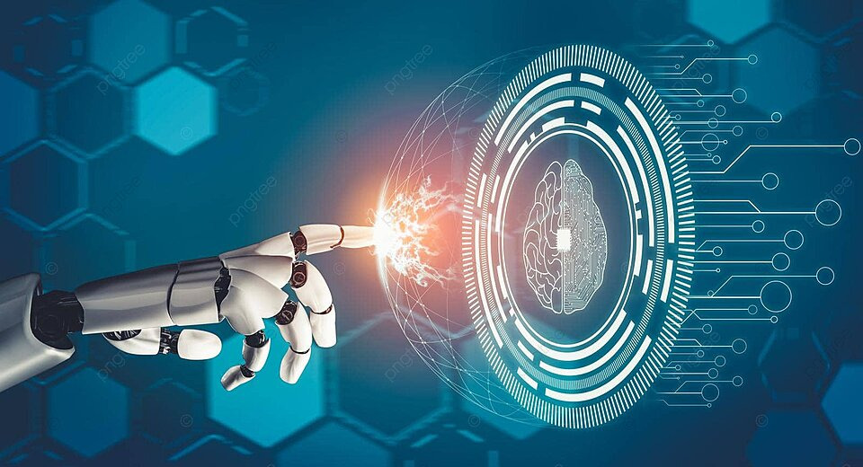
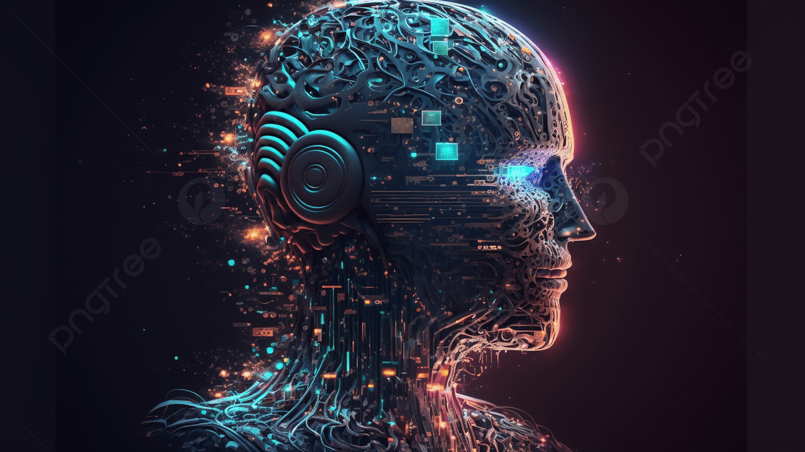

Artificial Intelligence: The Dawn of a New Era
Understanding AI: Beyond the Buzzwords
 Artificial Intelligence (AI) is rapidly transforming various sectors, moving beyond mere theoretical concepts to practical applications that redefine human-machine interaction. At its core, AI involves sophisticated algorithms and computational models that enable machines to perform tasks typically requiring human intelligence, such as learning, problem-solving, decision-making, and even understanding natural language. This new era promises unprecedented advancements, yet it also introduces a unique set of challenges and ethical considerations.
Key Applications Driving Innovation
AI's influence is pervasive, touching almost every aspect of modern life. From personalized recommendations on streaming platforms and smart home devices that learn user preferences, to complex systems in autonomous vehicles and advanced medical diagnostics.  In healthcare, AI assists in early disease detection and drug discovery, while in finance, it enhances fraud detection and algorithmic trading. These applications highlight AI's potential to significantly improve efficiency, accuracy, and overall quality of life. The continuous innovation in these areas is a testament to AI's dynamic and evolving nature.
Navigating the Future: Challenges and Ethical Frameworks
While the benefits of AI are undeniable, its rapid development also brings forth critical challenges. Ethical concerns surrounding data privacy, algorithmic bias, and the potential impact on employment are at the forefront of global discussions. Ensuring AI systems are fair, transparent, and accountable is paramount for building public trust and facilitating responsible deployment.
Addressing these challenges requires a collaborative approach, involving technologists, policymakers, ethicists, and society at large. Establishing robust ethical frameworks and regulatory guidelines will be crucial in harnessing AI's power for the common good, paving the way for a future where AI serves humanity effectively and equitably.